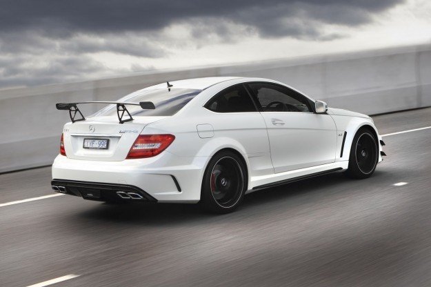
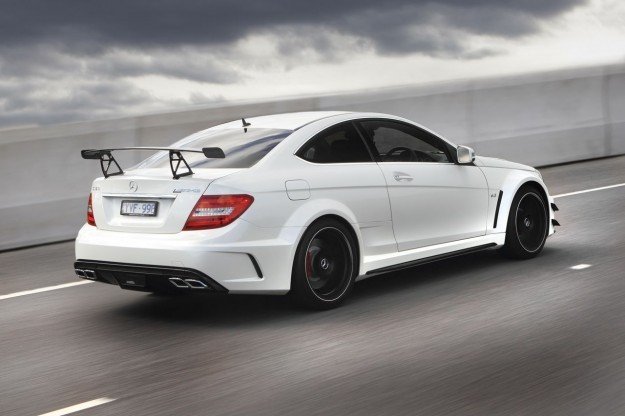

Pentru pasionați
Pentru unii doar mijlocul de deplasare zilnică,pentru alții porția de adrenalină din weekend, mașina a cunoscut o evoluție impresionantă de-a lungul secolelor, de la Ford Model T al lui Henry Ford sau beetle-ul lui Ferdinand Porsche, la adevărate bijuterii pe 4 roți din epoca contemporană. Mașinile in secolul vitezei sunt din ce in ce mai variate si se pliază cu atât mai bine pe nevoile cumpărătorilor. Dacă celelalte secțiuni erau, in mare parte, dedicate oamenilor obișnuiți ale căror pretenții se opreau la interioare luxoase sau consum redus de carburant, iată 10 dintre mașinile din ultimii ani care merită atenția unui public pasionat de sporturi cu motor. Țin să menționez că nu am putut include toate modelele impresionante care mi au luat ochii la saloanele auto, însă mi am dat silința să vă răsfăț gusturile in automobile cu un top mult mai variat decât ce ați văzut până acum.
Sper că îți vor plăcea alegerile mele :)))
Mercedes C63 AMG 2009-2016


 

La fel de stylish ca limuzina germană cu care te-ai obișnuit, Mercedes-Benz propune o viziune nouă asupra modelului C-klasse, mai joasă, mai lată și mai agresivă. Schimbările cosmetice sunt puține, dar suficiente cât să ofere o siluetă ușor de recunoscut. Cu un monstru V8 sub capotă, aripi lățite, spoiler pe portbagaj și o grilă larg deschisă pentru cât mai multă răcire, C63 este rețeta perfectă pentru o mașină pentru pasionați. Adept al zicalei din Detroit:"There is no substitute for cubic displacement", AMG a reușit să pună un V8 aspirat natural de 6.2 litri asamblat manual sub capota sedanului de clasă B. Numerele sunt prodigioase - 451cp și un cuplu de 443Nm, iar sunetul pe care îl produce evacuarea se ridică la nivelul așteptărilor........(poza cu break)......Disponibil atât în caroserie break, coupe și sedan, C63 este gata să satisfacă nevoile cumpărătorilor, mai ales că acum un exemplar în stare bună poate fi găsit la un preț pornind de la 20.000 euro pe piața automobilelor rulate.
Chevrolet Corvette C8
"Every man's supercar" cum este numit în State, noul Corvette arată mai exotic ca niciodată. În premieră, constructorul american oferă o amplasare centrală a motorului, celebrul V8 6.2 aspirat care acum produce 500 cai putere. Acest model aduce cu sine multe schimbări față de predecesorul său, între care menționăm o transmisie cu dublu ambreiaj și lipsa unei cutii manuale. Cabina noului model vine cu instrumentar de bord digital de 12 inci, un ecran tactil de dimensiuni generoase, cu volan încălzit și sistem audio Bose cu 10 difuzoare sau opțional Bose Perofrmance Series u 14 difuzoare. Viitorul posesor de Corvette C8 Stingray poate comanda unul dintre cele trei tipuri diferite de scaune (GT1, GT2 sau Competition Sport) și una dintre cele șase teme coloristice interioare. Și centurile sunt disponibile în șase culori. Un pachet Z51 aduce frâne performante, evacuare sport și amortizare adaptivă. În Statele Unite, noul Stingray va avea un preț de pornire sub 60.000 de dolari, ceea ce îl face best-buy pentru anul 2020. Ce altceva de pe piață arată atât de bine, este atât de rapid, oferă tehnologie de ultimă generație și se conduce ca mașini de 3-4 ori mai scumpe?
Alfa Romeo Giulia Quadrifoglio

Cu un V6 biturbo de 505 cai putere și tracțiune spate, noul sedan italian de top se dovedește demn de a ține piept competitorilor germani. Direcția este extrem de precisă și echilibrată, ceea ce îi conferă Giuliei un comportament aparte pe drumurile virajate, făcându-te să-ți dorești să îi experimentezi limitele. Sunetul produs de evacuare este excepțional, depășind clar corespondentul de la Bmw. Suspensia este și ea foarte bine setată, însă este înclinată către rigiditate și sportivitate. Deși o cutie manuală nu este disponibilă, cutia automată de la ZF își face treaba și nu lasă de dorit în nicio privință. Deși duce lipsă de unele dotări de lux, cum ar fi scaune ventilate și acționate electric sau ornamente interioare din materiale premium, Alfa este un chilipir chiar și cumpărată din reprezentanță, ca să nu mai vorbim de ofertele second-hand care o pun pe lista de best-buy a oricărui pasionat. Exact asta este marea problemă a brand-ului, cumperi o Alfa doar dacă ești cunoscător, nu este pe gusturile tuturor, fapt ce a rezultat într-un număr redus de vânzări. Cu toate acestea, este o achiziție exclusivistă și cu siguranță nu vei întâlni multe exemplare pe stradă.
Dodge Challenger Hellcat

Numele Hellcat te duce cu gândul la cauciucuri fumegând și miros de pneuri arse. Într-adevăr, se ridică la nivelul așteptărilor, aspirând la titlul de regele drag racingului. Cu un V8 supraalimentat de 6.2 urlând din toți rărunchii și 707 cai putere în versiunea de bază, putere în linie dreaptă e domeniul în care excelează fără doar și poate. În versiunea Redeye puterea este împinsă până la 797 cai putere, fiind cu atât mai nebună. Ca și cum nu ar fi fost suficient de periculos, Hellcat vine și cu cutie manuală și automată, în funcție de preferință. Oricum, să pui toată puterea jos este un exercițiu destul de dificil, întrucât tracțiunea spate nu ajută la plecarea de pe loc, motiv pentru care atinge 100km/h în 3.7 secunde. Însă, dacă ceea ce vrei e să mergi rapid în curbe, nu e mașina potrivită, în mare parte din cauza greutății excesive. În orice caz, orice challenger reprezintă rețeta americană de succes: tracțiune spate, două uși și multă, multă putere dintr-un V8.
Mercedes G500 4x4 Squared
Probabil unul dintre cele mai controversate automobile produse de Mercedes-Benz vreodată, bătrânul G-class se întoarce într-o variantă de caroserie nouă, iar reacţiile sunt pe măsură: avem de-a face cu un offroader extrem. Gardă la sol de 450 de mm, unghi de atac de 52 de grade, unghi de degajare de 54 de grade, capacitatea de a traversa ape adânci de 1 metru, roţi de 22 de inci…și un preț exorbitant pe care 90% dintre cititori nu și-l vor permite prea curând.. Sub capotă se află un V8 de 4 litri, twin turbo, prezent deja pe AMG GT şi pe C63. Produce 422 de căluţi-putere şi un cuplu de 610 Nm, adică tot ce ai nevoie pentru a zbura pur şi simplu direct în vârful muntelui. Acum, trebuie să ştiţi şi că maşina are aproape 3 tone (2980 kg), dar că este capabilă să prindă 210 km/h! Iar pe deasupra, este produsă în ediție limitată, fapt ce îl face o investiție bună... și excentrică.
Jeep Gladiator
Din punct de vedere al designului, Gladiatorul arată la fel ca actualul Wrangler cu patru uși, deși are în spate o benă. Pentru a se adapta noii părţi a caroseriei, Jeep a făcut cadrul pick-up-ului mai lung, iar ampatamentul a crescut cu 492 mm.
Garda la sol atinge 282 de mm, în benă poate duce până la 726 de kg, iar greutatea maximă a unei remorci tractate nu trebuie să depăşească 3.470 de kg.
În funcție de configurația aleasă, dintre care patru sunt disponibile (Sport, Sport S, Overland și Rubicon), bena mai poate beneficia de un acoperământ textil, un separator, o carcasă de tonaj, ralings-uri şi multe altele. La fel ca și pe Wrangler, multe dintre panourile de caroserie ale Gladiatorului pot fi îndepărtate cu ușurință folosind doar un set de scule.
Uşile şi acoperişul pot fi lăsate în garaj, iar parbrizul se poate lăsa pe capotă pentru o adevărat experienţă în aer liber. *****(poza cu el decapotabil)****De asemenea, opţiunea premium Sunrider include un acoperiş soft top dacă cel dur nu este cumva la îndemână.
Pick-ul va intra pe piață cu un singur agregat natural aspirat V6 de 3.6 litri (289 CP/352 Nm), care este combinat cu o cutie mecanică cu șase trepte sau cu una automată cu opt rapoarte.
În 2020, va exista și o versiune cu un V6 turbodiesel de 3.0 litri (264 CP/600 Nm), motor care va fi cuplat doar la o cutie automată. Pe cel mai extrem model numit Gladiator Rubicon este oferit standard un sistem Rock-Trac care adaugă transmisiei rapoarte inferioare pentru posibilitatea deplasărilor cu viteze practic infime, aduce funcţii de blocare a diferențialelor și un stabilizator frontal care poate fi dezactivat.
De asemenea, dacă va fi nevoie de personalizare, atelierul Mopar este gata să ofere peste 200 de piese şi accesorii.
BMW M5 F10
Sub capotă „zace” un propulsor V8 de 4,4 litri supraalimentat denumit de bavarezi M TwinPower Turbo. În linii mari nu este o noutate absolută acest agregat fiind acelaşi cu cel regăsit pe X5 şi X6 M Power. Agregatul V8 dezvoltă 560 CP între 6.000 rpm şi 7.000 rpm, fiind poate primul propulsor care oferă puterea maximă pe o plajă de turaţii. Puterea este transmisă spre puntea spate prin intermediul unei cutii de viteze cu dublu ambreiaj, cutie ce are 7 rapoarte botezată de BMW – M Double Clutch Transmission Drivelogic. Cu toate acestea, au fost produse și variante cu cutie manuală cu 6 trepte, dar exemplarele de acest fel sunt destul de rare. Dispune de programe care să optimizeze tracţiunea, alegând treapta optimă de viteză pentru a elimina în modul automat trimiterea unui procent prea mare de putere spre puntea spate ceea ce ar determina intervenţia sistemelor electronice de stabilitate şi astfel reducerea eficienţei când vine vorba de reprize. Cutia dispune şi de funcţia Launch Control, firesc când ai de trimis spre puntea spate 560 CP şi 680 Nm. Pe puntea spate regăsim un diferenţial activ complet blocabil în funcţie de situaţie. De asemenea, pentru un M pursânge, prețul său este unul rezonabil, iar fiabilitatea este mult îmbunătățită față de precedentul model.
Audi RS4 B7 Sedan
Cu siguranță unul dintre cele mai impresionante mașini care au părăsit fabrica inginerilor de la Audi este Rs4 B7. Cu un design sportiv, dar subtil, combinat cu un V8 de 4200cm3 și o cutie manuală, acest Audi e departe de a fi o simplă berlină germană. Fiind ultimul Rs aspirat din gama Audi alături de fratele mai mare Rs6, aceasta oferă putere brută și feedback instant când calci pedala de accelerație. Conferind o senzație deosebit de plăcută pe drumurile virajate, cred cu tărie că va deveni o mașină de colecție într-o zi. Direcția este cât se poate de precisă, creând o conexiune puternică între șofer și drum. Putând fi echipat cu o evacuare sport din fabrică, motorul aspirat ce se turează până la 8000 rotații pe minut scoate un sunet demențial când este pus la treabă. Suspensiile sunt bine configurate, oferind sportivitate în curbe dar și o siluetă de drum relaxată pe autostradă sau drum întins. De asemenea, Rs4 beneficiază de o caroserie întărită și lățită, oferind atât un aspect musculos și sportiv, cât și senzația de a fi lipit de șosea. O asemenea bestie germană poate fi găsită la prețuri derizorii, însă recomandăm achiziționarea unui exemplar cu istoric service și kilometrii cât mai puțini, luând în calcul setea de ulei pe lângă cea de benzină.
Audi RS6 C8

Noul Audi RS6 Avant este aici. Este unul dintre cei șase membri ai familiei de performanță RS. Un motor V8 twin-turbo îi asigură mașinii de familie cifre impresionante. Propulsorul V8 TFSI twin-turbo de 4.0 litri dezvoltă 600 de cai putere și un cuplu de 800 Nm sub capota noului Audi RS6 Avant. Unitatea este cuplată la un sistem mild-hybrid de 48 de volți, care ajută la reducerea consumului de combustibil și a emisiilor. Versiunea sportivă a celei de-a patra generații ajunge de la 0 la 100 km/h în doar 3,6 secunde și are nevoie de 12 secunde pentru a atinge 200 km/h. Viteza sa maximă este limitată electronic la 250 km/h. Echipată cu Dynamic Package, mașina atinge 280 km/h, iar Dynamic Package Plus impinge viteza maximă la 305 km/h. RS Avant primește o mână de ajutor și datorită noii funcții Launch Control, integrate în transmisia automată Tiptronic cu 8 repte, care asigură putere și cuplu maxime încă de la plecarea de pe loc. Este ușor de recunoscut noul RS6 Avant, pentru că are o grilă Singleframe finisată în negru lucios, prize de aer mai mari, un eleron deasupra lunetei și terminații cromate ale sistemului de evacuare RS. Un alt aspect interesant este că nu împarte prea multe componente cu versiunea standard A6 Avant, întrucât în afară de plafon, haion și ușile față, totul este lățit și modificat pentru a oferi un plus de stil și sportivitate.
Honda S2000
În 1999, când a fost pentru prima oară introdusă, dacă voiai un roadster rapid , chipeș și cu o distribuție perfectă a maselor de 50/50, nu aveai prea multe opțiuni, unica alternativă fiind Mazda Mx5, dar cu greu ar fi putut fi numită rapidă. Spre deosebire de alte decapotabile care sufereau de o vibrație a parbrizului când mergeai pe un drum cu denivelări, Honda propune un șasiu în întregime din aluminiu care conferă o rigiditate crescută și o manevrabilitate neauzită la vremea aceea. Motorul lui S2000 a contribuit de asemenea la afirmarea modelului față de restul competitorilor, producând 237cp dintr-un bloc de 2000cm3 fără supraalimentare, turbine sau compresor mecanic. Pe lângă numerele impresionante, V-tech-ul japonez oferea și un redline de 9000rpm și o amplasare centrală a blocului. Toate acestea, combinate cu o cutie manuală cu 6 rapoarte, se constituie într-o rețetă a succesului. Instrumentarul de bord digital cu turometrul amplasat longitudinal oferă un alt indiciu că mașina era foarte evoluată pentru perioada ei, motiv pentru care producția a continuat până în 2008. Pornind de la doar 10.000 euro, Honda este un chilipir pentru experiența pe care o oferă șoferului.